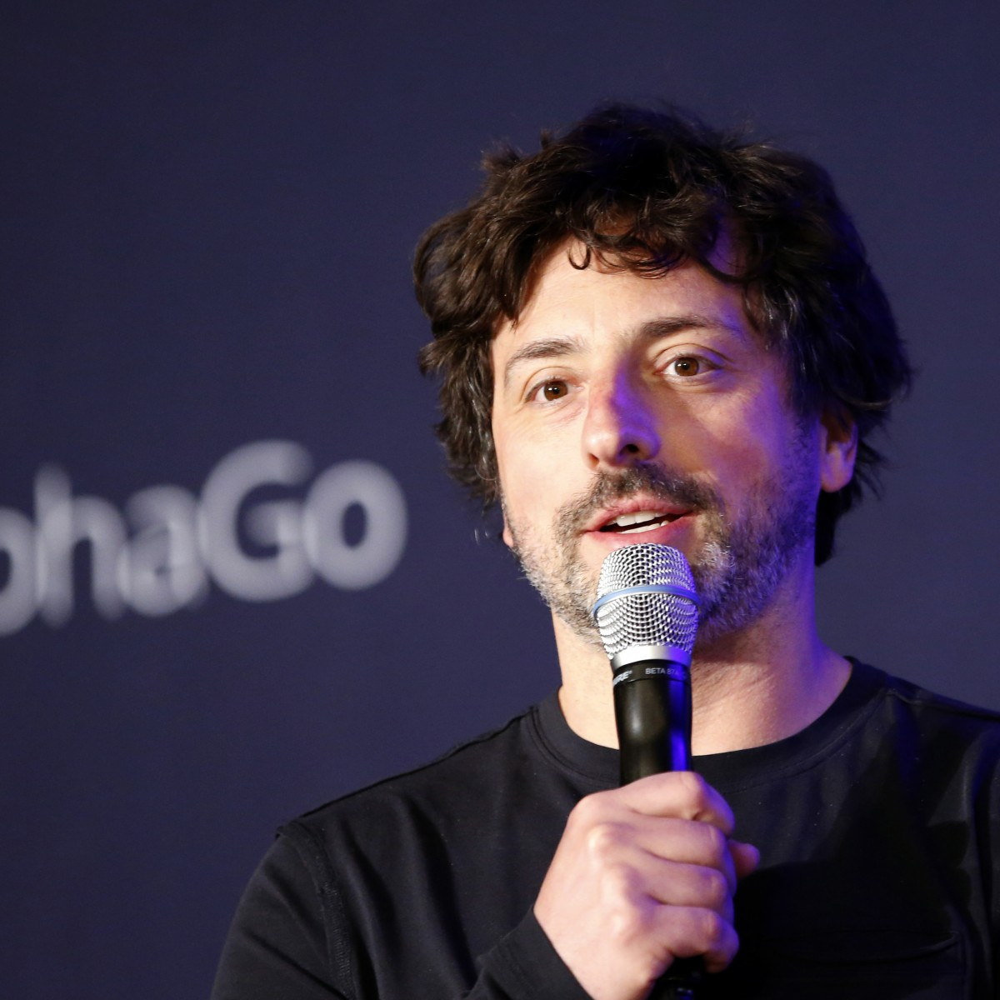
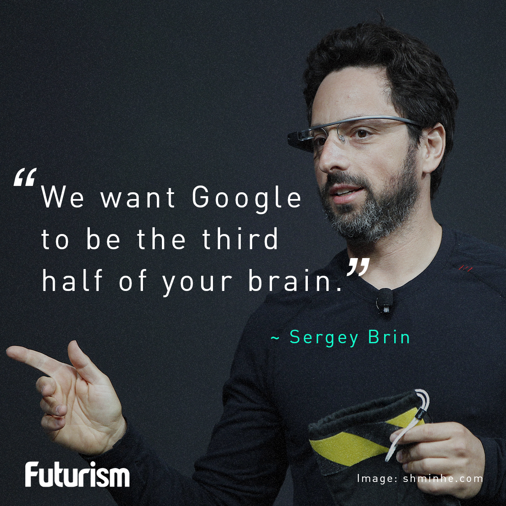

- by Ean and Alejandro


“Solving big problems is easier than solving little problems.”
—Sergey Brin
"Obviously everyone wants to be successful, but I want to be looked back on as being very innovative, very trusted and ethical and ultimately making a big difference in the world."
—Sergey Brin
"You always hear the phrase, money doesn't buy you happiness. But I always in the back of my mind figured a lot of money will buy you a little bit of happiness. But it's not really true. I got a new car because the old one's lease expired."
—Sergey Brin
Sergey Brin founded the largest, most commonly used search engine the world. This invention has changed the internet forever.
Sergey Mikhaylovich Brin as his full name, is a computer scientist and internet entrepreneur. Alongside with Larry Page he co-founded Google. As Sergey and Larry both becoming billionaires as Google developed into the world’s most popular search engine known to date. As Google developed grew, so did their pockets, bringing him to the 13th-richest person in the world, with an estimated net worth of US $52.2 billion according to Forbes. Brin is also the President of Google's parent company Alphabet Inc. After graduating from college, he enrolled in Stanford University to acquire a PhD in computer science. There he met Larry Page, with whom he later became best buds. They stuffed their dormitory room with inexpensive computers and applied Brin's data mining system to build a web search engine. Their program became popular at Stanford, they then released it to the whole Internet. And furthermore, it became the worlds best search engine known to date.